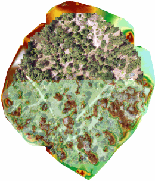
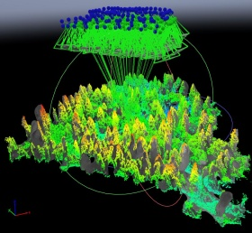

Tue. June 23, 2020
Things you should know IN the field; Image Processing Part 1
All times are Pacific Daylight Time
9:00 - 9:50. Introduction to Drone Photogrammetry and Data Processing
In this session, we’ll take a deeper dive into the principles of photogrammetry, and discuss their relevance for planning data collection missions and processing data. We’ll discuss the types of different data outputs from photogrammetry, the generic workflow for processing data, and how to deal with commonly encountered errors. We’ll also cover practical aspects such as what type of computer you need, cloud vs. desktop, the software options available, and what you need to know about file formats.
Format: presentation
Instructor(s): Maggi Kelly
Materials:
Recording:
— Image Processing Pt1 —
10:00 - 11:50. Processing UAV Images with ArcGIS Pro
ArcGIS Pro desktop has the ability to process drone imagery and produce 2D outputs including an orthomosaic and elevation surface. Although not as feature rich as dedicated image processing software (e.g., Pix4Dmapper, Drone2Map, Agisoft Metashape), you can use the popular ArcGIS Pro to stitch images. It’s relatively easy to use and helpful for small drone projects.
Format: hands-on
Instructor(s): Chippie Kislik, Maggi Kelly
Pre-requisites: Participants should complete ‘Exercise 0 - ArcGIS Pro’ and attend the ‘Intro to Photogrammetry and Data Processing’ session prior to this workshop.
Additional instructions: To complete this hands-on workshop, you should have ArcGIS Pro installed on your computer, and a working license (see ArcGIS Pro on the Computer Setup page for details). After you install the software, please complete the ArcGIS Pro “Step Zero” assignment (short), and download the data prior to the workshop (links will be shared the week before DroneCamp).
Materials:
Assignment for students : Homework Questions
: Homework Questions
Recording:
10:00 - 11:50. Introduction to Multispectral Image Processing with Pix4Dmapper
Pix4Dmapper is one of the top platforms for stitching drone imagery, producing both 2D and 3D outputs. This introductory workshop will cover the Pix4Dmapper desktop interface and workflow, with hands-on practice loading multi-spectral imagery, registering ground control points, entering radiometric calibration coefficients, and visualizing the outputs. Additional datasets and self-paced exercised with RGB and thermal data will provided to do on your own.
Format: hands-on
Instructor(s): Sean Hogan
Pre-requisites: Participants should attend the ‘Intro to Photogrammetry and Data Processing’ session immediately prior to this one.
Additional instructions: To complete this hands-on workshop, you need to have Pix4Dmapper installed on your computer, and a working license (a trial license is fine). See Pix4Dmapper on the Computer Setup page for details. After you install the Software, you should complete the Pix4D “Step Zero” assignment (short), and download the data prior to the workshop.
Materials:
- Pix4Dmapper Exercise - Step Zero
- Pix4Dmapper Exercise Data (3 GB)
- Exercise
-
Study Area Overview (video):
Recording:
14:00 - 14:50. How to be a Good Visual Observer
After the Pilot in Command, the most important person on the flight crew is probably the Visual Observer(s). In this workshop, you will learn the key roles of a Visual Observer, how Visual Observers fit in under Part 107, the essential elements of a pre-flight briefing, skills for monitoring air traffic, and strategies for effective crew communication.
Format: presentation
Instructor(s): Brandon Stark, Jonathan Rivas
Materials:
Recording:
15:00 - 15:50. High Precision Mapping
Although drone data can be incredibly detailed, high resolution does not mean high precision! High precision means the recorded location of your images and processed drone products is accurate to within a few inches or less relative to established geodesic control points. Drones are capable of capturing very precise data, but to do so you need special equipment and data processing steps. This workshop will cover everything you need to know to create highly precise maps from drones, including equipment choices and best practices.
Format: presentation
Instructor(s): Pat Iampietro
Materials:
Recording: